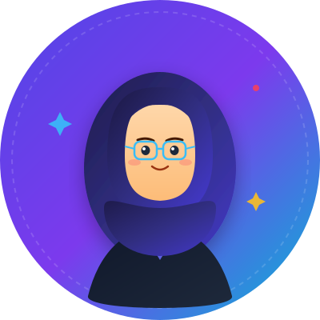
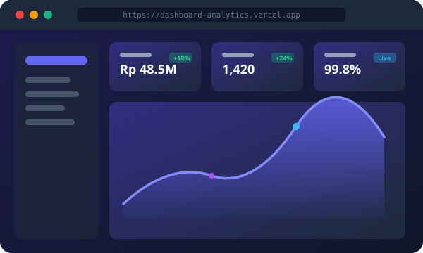
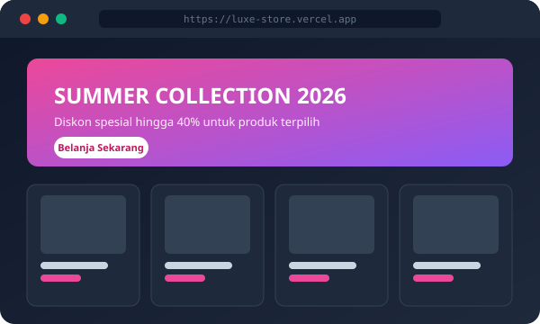
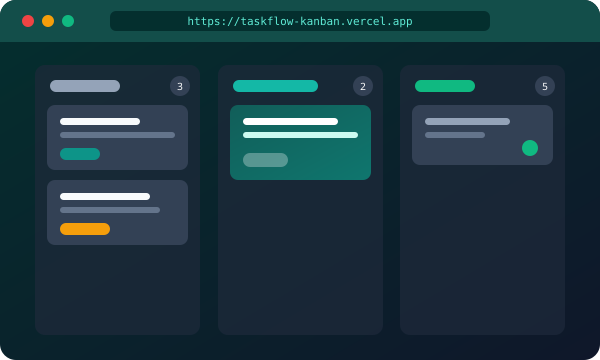
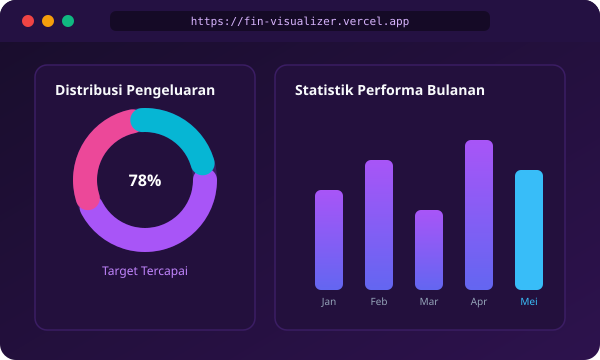

Halo, Saya
Annisa Fadilah Azhar
Menggabungkan keahlian logika pemrograman, estetika desain modern, dan analisis data untuk membangun website yang cepat, responsif, dan mudah digunakan oleh semua orang.


Kenali Saya Lebih Dekat
Berdedikasi untuk memberikan kontribusi nyata melalui teknologi, desain yang terencana, dan pemecahan masalah.
Halo! Saya Annisa Fadilah Azhar, seorang antusias teknologi dan web developer yang senang merancang aplikasi web modern serta mengolah data menjadi informasi yang bermanfaat.
Fokus utama saya adalah menciptakan kode yang bersih (clean code), tampilan ramah pengguna (UI/UX), serta performa website yang sangat ringan sehingga dapat diakses dengan cepat di perangkat manapun.
Saya selalu bersemangat mempelajari teknologi baru, berkolaborasi dalam tim, serta mengubah ide-ide kreatif menjadi solusi digital nyata yang fungsional.
Keahlian & Teknologi
Peralatan dan teknologi yang saya gunakan sehari-hari dalam membangun proyek digital berkualitas tinggi.
Karya & Proyek Unggulan
Berikut adalah beberapa proyek terbaik yang pernah saya kembangkan dengan fokus pada fungsionalitas dan tampilan antarmuka yang memikat.

Analytics Dashboard SaaS
Dashboard analitik interaktif untuk memantau performa penjualan, metrik pengunjung secara real-time, serta grafik keuangan yang informatif.

Luxe Store - Katalog Belanja
Toko daring modern dengan katalog produk dinamis, filter kategori instan, keranjang belanja interaktif berbasis LocalStorage, dan layout responsif.

TaskFlow - Kanban Board
Aplikasi manajemen tugas tim dengan fitur drag and drop kartu tugas, penanda deadline, prioritas label warna, dan penyimpanan otomatis di browser.

FinVisualizer - Perencana Keuangan
Alat visualisasi data anggaran dan pengeluaran pribadi dengan grafik interaktif, kalkulator alokasi tabungan, dan ekspor laporan ringkas.
Riwayat Pengalaman & Pendidikan
Latar belakang pendidikan, kursus tersertifikasi, dan pengalaman organisasi/kerja yang telah saya lalui.
🎓 Pendidikan & Sertifikasi
Pendidikan Strata 1 (S1)
Mempelajari dasar ilmu komputer, struktur data, pemrograman web, rekayasa perangkat lunak, serta manajemen basis data dengan predikat memuaskan.
Sertifikasi Frontend Web Development
Menyelesaikan modul fundamental web, penguasaan JavaScript modern, manipulasi DOM, konsumsi REST API, dan penerapan responsive web design.
Pelatihan UI/UX Design & Prototyping
Mendalami riset pengguna (user research), pembuatan wireframe, design system, interactive prototyping pada Figma, dan usability testing.
💼 Pengalaman & Proyek
Freelance Web Developer
Membangun website portofolio, landing page UMKM, serta optimasi kecepatan situs web dengan performa tinggi dan kompatibilitas mobile penuh.
Staf Divisi Teknologi Informasi
Mengelola publikasi digital organisasi, memelihara website acara kampus, dan berkolaborasi dalam tim publikasi serta dokumentasi.
Kolaborator Open Source & Tim Proyek
Berpartisipasi aktif dalam pengembangan proyek open-source, mengelola repository dengan Git, dan melakukan code review bersama rekan sejawat.
Hubungi Saya
Punya pertanyaan, tawaran proyek, peluang magang, atau ingin berdiskusi? Jangan ragu untuk mengirimkan pesan!